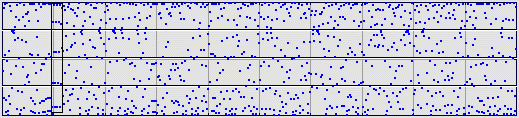

|  |
| What about the five clumps of data points about one-tenth of the way from the left side (enclosed by the box)? |
| Those should correspond to a |
| An analysis similar to, but more complicated than,
that just given would locate the |
This example illustrates an important limitation of driven IFS: this method does not give a particularly transparent representation of cycles of order higher than 2.
Return to Equal-Size Bin Sample.